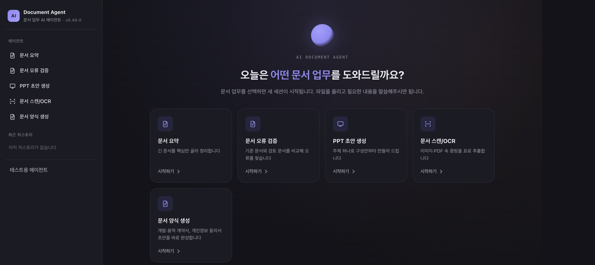
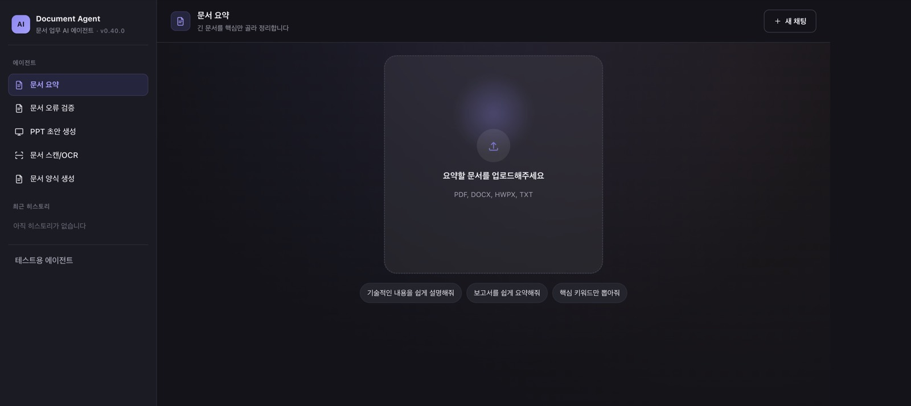
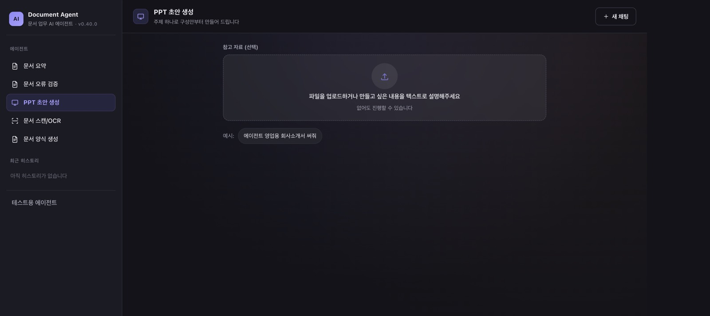
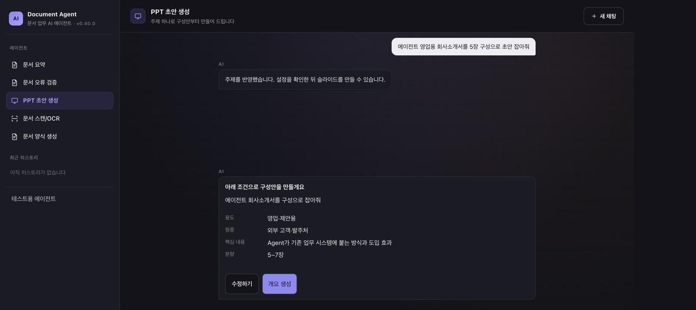
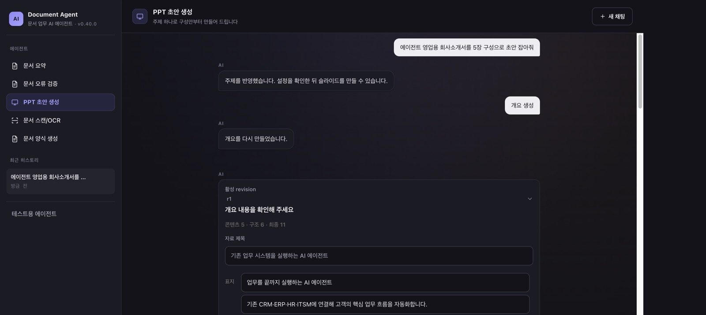
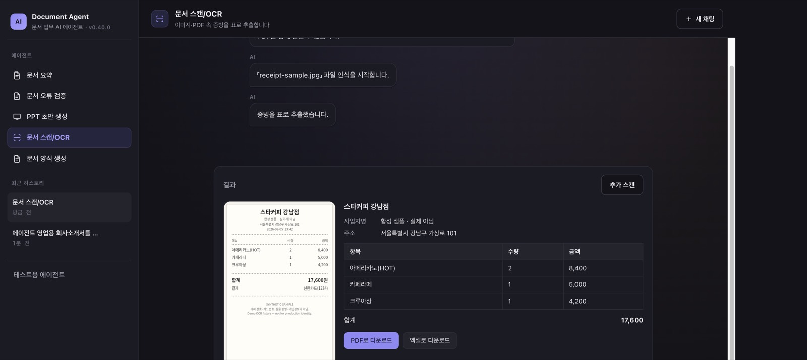
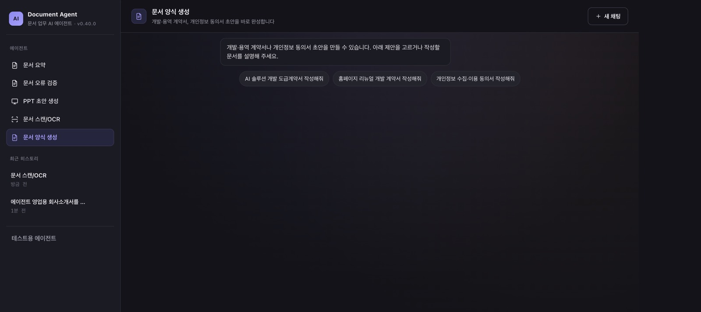

fde-agent-lab
2026.06 – 2026.09AI Agent FDE(Forward Deployed Engineer) 시나리오를 보여주는 통합 Demo Hub입니다. Multi-Agent·MCP·인증을 묶어 문서/PPT 등 업무 도구 시나리오를 구성했습니다.
기여: Backend·Frontend 전체 구성. Agent 중 문서 요약, PPT 초안 생성, 문서 스캔/OCR을 직접 구현했습니다. 나머지 Agent 2개는 동료 작업입니다.






